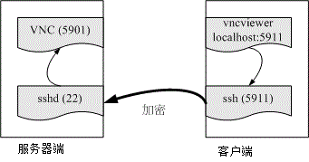

事实上 ssh 真的很好用！你甚至不需要启动甚么 xdmcp, vnc, xrdp 等等服务，使用 ssh 的加密通道就能够在客户端启动图形接口！
此外，我们知道很多服务都是没有加密的，那么能不能将这些服务透过 ssh 通道来加密呢？嘿嘿！当然是可以！
在这个章节当中，我们就来谈谈一些 ssh 的进阶应用吧！
 11.6.1 启动 ssh 在非正规埠口 (非 port 22)
11.6.1 启动 ssh 在非正规埠口 (非 port 22)
从前面的章节里面我们就曾经提过， sshd 这个服务其实并不是很安全，所以很多 ISP 在入口处就已经将 port 22
关闭了！为什么要这么作呢？这是因为很多网站管理员并没有定期的进行软件 update ，而且为了方便，又很开心的将
port 22 对全世界开放。由于很多 cracker 会使用扫描程序乱扫整个 Internet 的埠口漏洞，这个 port 22
就是一个很常被扫描的端口啦！为了杜绝这个问题，所以 ISP 先帮你把关，先将 port 22 关闭！这也是为了整个区网好！
只是，像鸟哥这种没有 ssh 就快要活不下去的人，关闭了 port 22 那鸟哥的头都痛了！没有办法工作啊！
那怎办？没关系，其实我们可以将 ssh 开放在非正规的埠口。如此一来， cracker 不会扫描到该端口，而你的
ISP 又没有对该埠口进行限制，那你就能够使用 ssh 啰！很棒吧！那就来试看看。我们底下将 ssh 开放在 port 22 及
port 23 试看看 (请注意， port 23 不能够有被使用喔！)。
设定 ssh 在 port 22 及 23 两个埠口的设定方式
[root@www ~]# vim /etc/ssh/sshd_config
Port 22
Port 23 <==注意喔！要有两个 Port 的设定才行！
[root@www ~]# /etc/init.d/sshd restart
|
但是这一版的 CentOS 却将 SSH 规范 port 仅能启动于 22 而已，所以此时会出现一个 SELinux 的错误！那怎办？没关系，
根据 setroubleshoot 的提示，我们必须要自行定义一个 SELinux 的规则放行模块才行！有没有很难呢？其实还算简单！
整体流程是这样的：
# 1. 于 /var/log/audit/audit.log 找出与 ssh 有关的 AVC 信息，并转为本地模块
[root@www ~]# cat /var/log/audit/audit.log | grep AVC | grep ssh | \
> audit2allow -m sshlocal > sshlocal.te <==扩展名要是 .te 才行
[root@www ~]# grep sshd_t /var/log/audit/audit.log | \
> audit2allow -M sshlocal <==sshlocal 就是刚刚建立的 .te 檔名
******************** IMPORTANT ***********************
To make this policy package active, execute:
semodule -i sshlocal.pp <==这个指令会编译出这个重要的 .pp 模块！
# 2. 将这个模块加载系统的 SELinux 管理当中！
[root@www ~]# semodule -i sshlocal.pp
# 3. 再重新启动 sshd 并且观察埠口吧！
[root@www ~]# /etc/init.d/sshd restart
[root@www ~]# netstat -tlunp | grep ssh
tcp 0 0 0.0.0.0:22 0.0.0.0:* LISTEN 7322/sshd
tcp 0 0 0.0.0.0:23 0.0.0.0:* LISTEN 7322/sshd
tcp 0 0 :::22 :::* LISTEN 7322/sshd
tcp 0 0 :::23 :::* LISTEN 7322/sshd
|
有没有很简单！这样你就能够使用 port 22 或 port 23 联机到你的 sshd 服务喔！
由于预设的 ssh, scp, sftp 都是连接到 port 22 的，那么如何使用这些指令联机到 port 23 呢？
我们使用 ssh 当练习好了：
[root@www ~]# ssh -p 23 root@localhost
root@localhost's password:
Last login: Tue Jul 26 14:07:41 2011 from 192.168.1.101
[root@www ~]# netstat -tnp | grep 23
tcp 0 0 ::1:23 ::1:56645 ESTABLISHED 7327/2
tcp 0 0 ::1:56645 ::1:23 ESTABLISHED 7326/ssh
# 因为网络是双向的，因此自己连自己 (localhost)，就会抓到两只联机！
|
这样，你就能够避过一些 ISP 或者是 cracker 的扫描了！注意一下，不要将 port 开放在某些既知的埠口上，
例如你开放在 port 80 的话，那你就没有办法启动正常的 WWW 服务啦！注意注意！
11.6.2 以 rsync 进行同步镜像备份
我们曾在基础篇第三版第二十五章里头谈到 Linux 的备份策略，
该篇曾介绍常用的备份指令，包括 tar, dd, cp 等等，不过当时并未介绍网络，所以有个很棒的网络工具没有介绍，
那就是这个地方要谈到的 rsync 啦！这个 rsync 可以作为一个相当棒的异地备援系统的备份指令喔！
因为 rsync 可以达到类似『镜相 (mirror) 』的功能呢！
rsync 最早是想要取代 rcp 这个指令的，因为 rsync 不但传输的速度快，而且他在传输时，
可以比对本地端与远程主机欲复制的档案内容，而仅复制两端有差异的档案而已，所以传输的时间就相对的降低很多！
此外， rsync 的传输方式至少可以透过三种方式来运作：
- 在本机上直接运作，用法就与 cp 几乎一模一样，例如：
rsync -av /etc /tmp (将 /etc/ 的数据备份到 /tmp/etc 内)
- 透过 rsh 或 ssh 的信道在 server / client 之间进行数据传输，例如：
rsync -av -e ssh user@rsh.server:/etc /tmp (将 rsh.server 的 /etc 备份到本地主机的 /tmp 内)
- 直接透过 rsync 提供的服务 (daemon) 来传输，此时 rsync 主机需要启动 873 port：
1. 你必须要在 server 端启动 rsync ， 看 /etc/xinetd.d/rsync 即可；
2. 你必须编辑 /etc/rsyncd.conf 配置文件；
3. 你必须设定好 client 端联机的密码数据；
4. 在 client 端可以利用：rsync -av user@hostname::/dir/path /local/path
其实三种传输模式差异在于有没有冒号 (:) 而已，本地端传输不需要冒号，透过 ssh 或 rsh 时，就得要利用一个冒号 (:)，
如果是透过 rsync daemon 的话，就得要两个冒号 (::) ，应该不难理解啦！因为本地端处理很简单，
而我们的系统本来就有提供 ssh 的服务，所以，底下鸟哥将直接介绍利用 rsync 透过 ssh 来备份的动作喔。
不过，在此之前咱们先来看看 rsync 的语法吧！
[root@www ~]# rsync [-avrlptgoD] [-e ssh] [user@host:/dir] [/local/path]
选项与参数：
-v ：观察模式，可以列出更多的信息，包括镜像时的档案档名等；
-q ：与 -v 相反，安静模式，略过正常信息，仅显示错误讯息；
-r ：递归复制！可以针对『目录』来处理！很重要！
-u ：仅更新 (update)，若目标档案较新，则保留新档案不会覆盖；
-l ：复制链接文件的属性，而非链接的目标源文件内容；
-p ：复制时，连同属性 (permission) 也保存不变！
-g ：保存源文件的拥有群组；
-o ：保存源文件的拥有人；
-D ：保存源文件的装置属性 (device)
-t ：保存源文件的时间参数；
-I ：忽略更新时间 (mtime) 的属性，档案比对上会比较快速；
-z ：在数据传输时，加上压缩的参数！
-e ：使用的信道协议，例如使用 ssh 通道，则 -e ssh
-a ：相当于 -rlptgoD ，所以这个 -a 是最常用的参数了！
更多说明请参考 man rsync 的解说！
# 1. 将 /etc 的数据备份到 /tmp 底下：
[root@www ~]# rsync -av /etc /tmp
....(前面省略)....
sent 21979554 bytes received 25934 bytes 4000997.82 bytes/sec
total size is 21877999 speedup is 0.99
[root@www ~]# ll -d /tmp/etc /etc
drwxr-xr-x. 106 root root 12288 Jul 26 16:10 /etc
drwxr-xr-x. 106 root root 12288 Jul 26 16:10 /tmp/etc <==瞧！两个目录一样！
# 第一次运作时会花比较久的时间，因为首次建立嘛！如果再次备份呢？
[root@www ~]# rsync -av /etc /tmp
sent 55716 bytes received 240 bytes 111912.00 bytes/sec
total size is 21877999 speedup is 390.99
# 比较一下两次 rsync 的传输与接受数据量，你就会发现立刻就跑完了！
# 传输的数据也很少！因为再次比对，仅有差异的档案会被复制。
# 2. 利用 student 的身份登入 clientlinux.centos.vbird 将家目录复制到本机 /tmp
[root@www ~]# rsync -av -e ssh student@192.168.100.10:~ /tmp
student@192.168.100.10's password: <==输入对方主机的 student 密码
receiving file list ... done
student/
student/.bash_logout
....(中间省略)....
sent 110 bytes received 697 bytes 124.15 bytes/sec
total size is 333 speedup is 0.41
[root@www ~]# ll -d /tmp/student
drwx------. 4 student student 4096 Jul 26 16:52 /tmp/student
# 瞧！这样就做好备份啦！很简单吧！
|
你可以利用上面的范例二来做为备份 script 的参考！不过要注意的是，因为 rsync 是透过 ssh
来传输数据的，所以你可以针对 student 这个家伙制作出免用密码登入的 ssh 密钥！
如此一来往后异地备援系统就能够自动的以 crontab 来进行备份了！简单到爆！
免密码的 ssh 账号我们在上头已经讲过了，撰写 shell script 的能力也是必须要有的！利用 rsync
来进行你的备份工作吧！ ^_^！至于更多的 rsync 用法可以参考本章后面所列出的参考网站(注10)喔！
|
例题：
在 clientlinux.centos.vbird (192.168.100.10) 上面，使用 vbirdtsai 的身份建立一只脚本，这只脚本可以在每天的 2:00am
主动的以 rsync 配合 ssh 取得 www.centos.vbird (192.168.100.254) 的 /etc, /root, /home 三个目录的镜像到 clientlinux.centos.vbird
的 /backups/ 底下。
答：
由于必须要透过 ssh 通道，且必须要使用 crontab 例行工作排程，因此肯定要使用密钥系统的免密码账号。我们在 11.2.6 小节已经谈过相关作法，
vbirdtsai 已经有了公钥与私钥档案，因此不要再使用 ssh-keygen 了，直接将公钥档案复制到 www.centos.vbird 的 /root/.ssh/ 底下即可。
实际作法可以是这样的：
# 1. 在 clientlinux.centos.vbird 将公钥档复制给 www.centos.vbird 的 root
[vbirdtsia@clientlinux ~]$ scp ~/.ssh/id_rsa.pub root@192.168.100.254:~
# 2. 在 www.centos.vbird 上面用 root 建置好 authorized_keys
[root@www ~]# ls -ld id_rsa.pub .ssh
-rw-r--r--. 1 root root 416 Jul 26 16:59 id_rsa.pub <==有公钥档
drwx------. 2 root root 4096 Jul 25 11:44 .ssh <==有 ssh 的相关目录
[root@www ~]# cat id_rsa.pub >> ~/.ssh/authorized_keys
[root@www ~]# chmod 644 ~/.ssh/authorized_keys
# 3. 在 clientlinux.centos.vbird 上面撰写 script 并测试执行：
[vbirdtsai@clientlinux ~]$ mkdir ~/bin ; vim ~/bin/backup_www.sh
#!/bin/bash
localdir=/backups
remotedir="/etc /root /home"
remoteip="192.168.100.254"
[ -d ${localdir} ] || mkdir ${localdir}
for dir in ${remotedir}
do
rsync -av -e ssh root@${remoteip}:${dir} ${localdir}
done
[vbirdtsai@clientlinux ~]$ chmod 755 ~/bin/backup_www.sh
[vbirdtsai@clientlinux ~]$ ~/bin/backup_www.sh
# 上面在测试啦！第一次测试可能会失败，因为鸟哥忘记 /backups 需要 root
# 的权限才能够建立。所以，请您再以 root 的身份去 mkdir 及 setfacl 吧！
# 4. 建立 crontab 工作
[vbirdtsai@clientlinux ~]$ crontab -e
0 2 * * * /home/vbirdtsai/bin/backup_www.sh
|
|
11.6.3 透过 ssh 通道加密原本无加密的服务
现在我们知道 ssh 这个通道可以加密，而且，我们更知道 rsync 默认已经可以透过 ssh 通道来进行加密以进行镜像传输。
既然如此，那么其他的服务能不能透过这个 ssh 进行数据加密来传送信息呢？当然可以！很棒呢这个功能！
要介绍实做之前，我们先用图示来谈一下作法。
假设服务器上面有启动了 VNC 服务在 port 5901 ，客户端则使用 vncviewer 要联机到服务器上的 port 5901 就是了。
那现在我们在客户端计算机上面启动一个 5911 的埠口，然后再透过本地端的 ssh 联机到服务器的 sshd 去，而服务器的 sshd
再去连接服务器的 VNC port 5901 。整个联机的图示如下所示：

图 11.6-1、透过本地端的 ssh 加密联机到远程的服务器示意图
假设你已经透过上述各个小节建立好服务器 (www.centos.vbird) 上面的 VNC port 5901 ，而客户端则没有启动任何的 VNC 埠口。
那么你该如何透过 ssh 来进行加密呢？很简单，你可以在客户端计算机 (clientlinux.centos.vbird) 执行底下的指令：
[root@clientlinux ~]# ssh -L 本地埠口:127.0.0.1:远程端口 [-N] 远程主机
选项与参数：
-N ：仅启动联机通道，不登入远程 sshd 服务器
本地埠口：就是开启 127.0.0.1 上面一个监听的埠口
远程埠口：指定联机到后面远程主机的 sshd 后，sshd 该连到哪个埠口进行传输
# 1. 在客户端启动所需要的端口进行的指令
[root@clientlinux ~]# ssh -L 5911:127.0.0.1:5901 -N 192.168.100.254
root@192.168.100.254's password:
<==登入远程仅是开启一个监听埠口，所以停止不能动作
# 2. 在客户端在另一个终端机测试看看，这个动作不需要作，只是查阅而已
[root@clientlinux ~]# netstat -tnlp| grep ssh
tcp 0 0 0.0.0.0:22 0.0.0.0:* LISTEN 1330/sshd
tcp 0 0 127.0.0.1:5911 0.0.0.0:* LISTEN 3347/ssh
tcp 0 0 :::22 :::* LISTEN 1330/sshd
[root@clientlinux ~]# netstat -tnap| grep ssh
tcp 0 0 192.168.100.10:55490 192.168.100.254:22 ESTABLISHED 3347/ssh
# 在客户端启动 5911 的埠口是 ssh 启动的，同一个 PID 也联机到远程喔！
|
接下来你就可以在客户端 (192.168.100.10, clientlinux.centos.vbird) 使用『 vncviewer localhost:5911 』来联机，
但是该联机却会连到 www.centos.vbird (192.168.100.254) 那部主机的 port 5901 喔！不相信吗？
当你达成 VNC 联机后，到 www.centos.vbird 那部主机上面瞧瞧就知道了：
# 3. 在服务器端测试看看，这个动作不需要作，只是查阅而已
[root@www ~]# netstat -tnp | grep ssh
tcp 0 0 127.0.0.1:59442 127.0.0.1:5901 ESTABLISHED 7623/sshd: root
tcp 0 0 192.168.100.254:22 192.168.100.10:55490 ESTABLISHED 7623/sshd: root
# 明显的看到 port 22 的程序同时联机到 port 5901 喔！
|
那如何取消这个联机呢？先关闭 VNC 之后，然后再将 clientlinux.centos.vbird 的第一个动作 (ssh -L ...)
按下 [ctrl]-c 就中断这个加密通道啰！这样会使用了吗？你可以将这个动作用在任何服务上喔！
11.6.4 以 ssh 信道配合 X server 传递图形接口
从前一个小节我们知道 ssh 可以进行程序的加密传递，亦即 ssh 通道啦！那么可不可以用在 X 上面呢？
意思是说，那我能不能不要启动甚么很复杂的接口，就是在原有的接口底下使用 ssh 信道，将我所需要的服务器上面的图形接口传过来就好了？
是可以的喔！鸟哥用一个 Windows 上面的 Xming X server 作范例好了。整个动作是这样的：
- 先在 Windows 上面启动 XLaunch，并设定好联机到 www.centos.vbird 的相关信息；
- 启动 Xming 程序，会取得一个 xterm 程序，该程序是 www.centos.vbird 的程序；
- 开始在 xterm 上面执行 X 软件，就会在 Windows 桌面上面显示啰！
那我们就开始来处理一下 Xming 这个程序吧！启动 XLaunch 之后出现下图模样：

图 11.6-2、启动 XLaunch 程序-选择显示模式
记得上图中要选择 Multiple windows 会比较漂亮喔！然后按下『下一步』会出现下图：
图 11.6-3、设定 XLaunch 程序-选择联机方式
我们要启动一只程序，并且是开放在 ssh/putty 之类的软件帮忙进行 ssh 信道的建立喔！然后下一步吧。
图 11.6-4、设定 XLaunch 程序-设定远程联机的相关参数
Xming 会主动的启动一个 putty 的程序帮你连进 sshd 服务器，所以这里得要帮忙设定好账号密码的相关信息。
鸟哥这里假设你的 sshd 尚未取消 root 登入，因此这里使用 root 的权限喔！

图 11.6-5、设定 XLaunch 程序-是否支持复制贴上功能
使用默认值吧！直接下一步。

图 11.6-6、设定 XLaunch 程序-完成设定
很简单！这样就完成设定了！请按下完成，你就会看到 Windows 的桌面竟然出现如下的图示了！

图 11.6-7、Windows 桌面出现的 X client 程序
上面这只程序就是 xterm 这个 X 的终端机程序。你可以在上面输入指令，该指令会传送到 Linux server ，
然后再将你要执行的图形数据透过 ssh 信道传送到目前的 Windows 上面的 Xming ，你的 Linux
完全不用启动 VNC, X, xrdp 等服务！只要有 sshd 就搞定了！就是这么简单！例如鸟哥输入几个游戏程序，
你的 Windows 窗口 (看任务栏就知道了) 就会出现这样的情况：
Tips:
事实上，我们的 basic server 安装方式并没有帮你安装 xterm 喔！所以，你得要自己安装 xterm 才行！
yum install xterm 就安装好啦！然后上面的动作再重来一次，就可以成功啰！而底下的图标里面的相关软件，
也是需要你自己安装的呦！ ^_^
|  |

图 11.6-8、Windows 桌面出现的 X client 程序